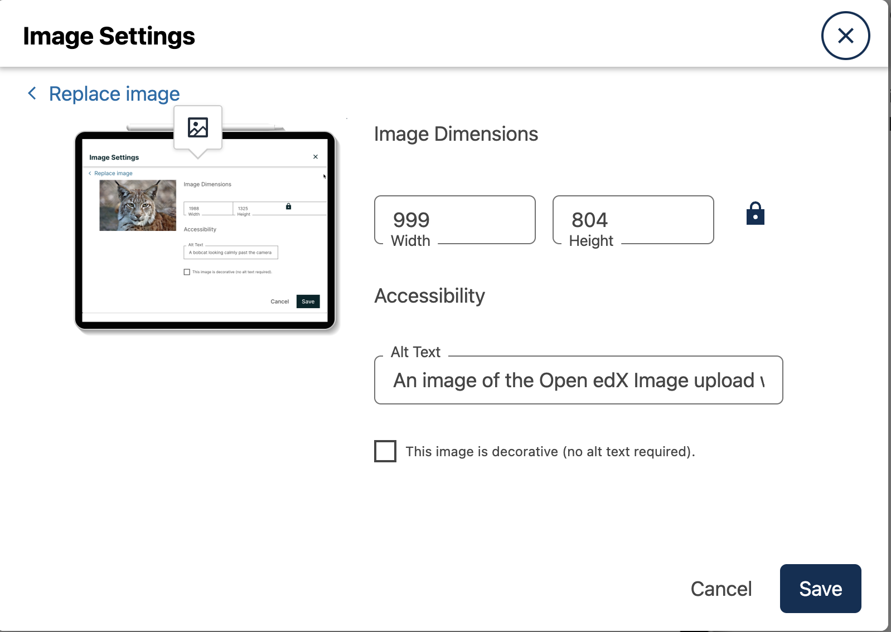
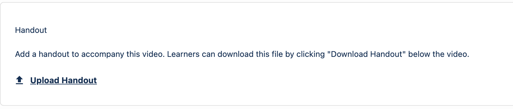

Accessibility Best Practices Checklist#
The Open edX project is dedicated to creating a platform that is not only itself accessible, but also enables course content creators to create accessible content. If you encounter platform issues that you believe might affect your ability to provide accessible course content, please post on the Open edX Forums for advice.
Make Sure Your Course Content is Perceivable#
The WCAG guidelines are organized around several principles, one of which is that web content must be perceivable. That is, information and user interface components must be presentable to users in ways they can interpret and understand; it cannot be invisible to all of their senses. In almost all cases, this means that the information should be available as text, which can be rendered or transformed into a format that can be perceived via assistive technologies such as screen readers or screen magnification.
To produce content that is perceivable by all learners, follow these guidelines.
Include Text Alternatives for Non-Text Content#
For any non-text content, provide text alternatives so that the content can be changed into other forms that people need, such as large print, braille, speech, symbols, or simpler language.
For non-text tests or exercises that would be invalid if presented in text, provide text alternatives that at least provide descriptions of the non-text content. Make sure that all images have useful alternative text that screen readers and other assistive technologies can read. For more information, see Use Best Practices for Describing Images.
Provide Alternatives for Time-Based Media#
For time-based media, including pre-recorded audio or video content, provide alternative equivalent information, such as captions, audio description or pre-recorded sign language interpretation. For more information, see Create Accessible Media.
Make Sure Your Content is Adaptable#
Design your course content so that it can be presented in different ways without losing information or structure. If your content includes specific information, structure, and relationships (such as sequences) that are conveyed through presentation, make sure the same information, structure, and relationships can be programmatically determined or are available in text.
HTML is an ideal format in which to publish course content, because it provides semantic elements with standardized roles, states, and properties. Users of assistive technologies rely on such semantic elements to effectively and efficiently consume and navigate content. Publish your content in HTML whenever possible.
Make sure your course content does not rely solely on sensory characteristics such as shape, size, visual location, orientation, or sound to be understood by learners.
Make It Easier for Learners to See and Hear Content#
Make the default presentation as easy to perceive as possible, especially by making it easier for learners to distinguish foreground information from the background, in both visual and audio elements.
For visual elements, techniques include making sure the fonts you use are readable, and that there is sufficient contrast between the foreground and background. Do not use color as the sole means of visually distinguishing an element or conveying critical information. If you must create images that contain text, make sure that the text has good contrast with the background. Images of text cannot be scaled or color corrected as effectively as HTML text. If you choose to override the platform’s default font colors, make sure that the foreground and background colors have sufficient contrast.
For audio elements, make sure that foreground sounds are sufficiently louder than background sounds.
Make Sure Your Course Content is Understandable#
Make sure your course content is readable and understandable. Online courses often have a global and diverse audience, including learners whose native language is not the language in which you created your course. There may also be learners who have a disability that affects reading, such as dyslexia or a visual impairment.
Learners will be better positioned to access concepts in your content if you write in clear, straightforward language and the content is well structured.
Write Simply and Clearly#
Avoid jargon. If unfamiliar words or phrases are relevant to the subject, explain them when they are first used, and include a glossary with your course materials. When you use an abbreviation or acronym, provide the full phrase the first time it appears. For example, “World Health Organization (WHO).”
The Center for Plain Language provides detailed resources on writing clearly and concisely, in language appropriate for your content and target audience.
See also the W3C’s Working Group Note on Making Content Usable for People with Cognitive and Learning Disabilities.
Use Best Practices for Describing Images#
When you use images (including diagrams, maps, charts, or icons) in your course content, you must provide text alternatives that provide information equivalent to the visual content, or that identify the purpose of such non-text content.
The text alternative for an image depends on the image’s context and purpose, and might not be a simple description of the image’s visual characteristics. In general, for every image, it is recommended that you provide a text alternative that provides the equivalent information that a sighted learner would obtain from viewing the image. If the image contains words that are important for understanding the content, include the words in the text alternative. If the image itself is being used as a link, the text alternative should describe the destination or action that will be performed when the link is activated. The following sections describe in greater detail the best ways to provide alternative text for various types of images.
The primary mechanism for providing a text alternative for an image in HTML is
the alt attribute. The text value of this attribute is what screen reader
users hear when they encounter the image in your content.
The revamped HTML editor that was implemented as part of the Redwood release includes a native field allowing authors to specify alt text when inserting an image:
Note
All images must include an alt attribute. There are some
cases, noted below, when an empty alt attribute (alt="") is
desirable. However, the alt attribute must never be omitted.
Note
For SVG elements, use aria-label instead of alt attributes. Non-interactive SVGs should also have role="img" and focusable="false".
If an image description that captures the essential information in an image does not fit in 200 characters, you can instead create useful and meaningful text alternatives for images in your course by leveraging the following guidelines for particular situations.
Images That Are Links or Controls#
If your image serves as a link to additional content or is an interactive form
control such as a button, the value of the alt attribute should describe
the destination of the link or the action that will be performed when the user
clicks the image. For example, if a linked image of an envelope opens an email
program to send an email, a useful text alternative is “Send message”, rather
than “Envelope.”
Images That Contain Text#
If your image contains text, the alt attribute would typically consist of
exactly the same text as is contained in the image. However, there are a
couple of conditions when having an empty alt attribute (alt="") is
the preferred solution.
If the text contained in the image is also available in nearby HTML, or
otherwise accessible text, including it in the alt attribute would be
redundant. In this case, setting an empty alt attribute (alt="") is
acceptable. Doing so effectively “hides” the image from screen reader users.
Warning
All images must include an alt attribute so do not omit
the alt attribute entirely. If the alt attribute is omitted
entirely, screen readers will read the value of the src attribute (the
path to the image on a web server) as a fallback. This is rarely helpful to
the user and often results in a poor user experience.
If the text contained in the image is for decorative purposes only and adds no
value to the content of the page, an empty alt attribute is also
acceptable.
Images That Contribute Meaning or Additional Context to the Page#
If the image is a simple graphic or photograph that provides additional
context to the surrounding content, the alt attribute should briefly
describe the image in a way that conveys that context.
Consider the following examples of meaningful alt attributes for a photo of the famous stone bridge, Ponte Vecchio in Florence, Italy.
For a representative image of the bridge included on a page about Florence, a meaningful
altattribute would be “Photo of Ponte Vecchio, a famous bridge and shopping center in Florence, Italy.”If the context of the page is about the bridge itself a meaningful
altattribute would be more specific: “Photo of Ponte Vecchio showing its three stone arches which span the Arno River.”For a technical diagram, or illustration, on a page about the construction of the bridge the
altattribute would include the details conveyed visually, such as dimensions and materials used: “The Ponte Vecchio is a stone bridge with three arches and a span-to-rise ratio of 5 to 1.”For a map intended to provide directions to the bridge, the
altattribute would provide directions as text.
Graphs or Complex Visual Representations of Information#
If the image is a graph or represents a complex piece of information, include
the information contained in the image as accessible text adjacent to the
image, or provide a link to the information. The alt attribute should
convey a summary of what the complex image conveys visually. For example, a
line graph that represents the price of a stock over time might be “The price
of the stock rises from $45 in January of 2015 to over $76 in June of 2015 with
a significant drop of 30% during the month of March.”
Note
For most charts, all of the data in the chart should be accessible. Summarization is not always appropriate. In some cases this means making a table available (visibly, as screen-reader-only text, or as a downloadable spreadsheet file).
Consider using a caption to display long descriptions so that the information
is available to all learners. In the following example, the image element
includes the short description as the alt attribute and the paragraph
element includes the long description.
<img src="image.jpg" alt="Photo of Ponte Vecchio"> <p>Photo of Ponte Vecchio showing its three stone arches and the Arno river</p>
Alternatively, provide long descriptions by creating an additional unit or downloadable file that contains the descriptive text and providing a link to the unit or file below the image.
<img src="image.jpg" alt="Illustration of Ponte Vecchio"> <p><a href="description.html">Description of Ponte Vecchio Illustration</a></p>
Images With Unknown Descriptions at The Time of Publication#
If a suitable text alternative is unknown at the time of publication (for
example, a webcam image that updates every 10 minutes) provide an alt
attribute that includes as much useful information as possible. For example,
“Live view of traffic on Interstate 90; refreshes every 10 minutes”
Non-Informative Images#
Images that do not provide information, including purely decorative images, do not need text descriptions. For example, an icon that is followed by link text that reads “Course Syllabus (EPUB)” does not need alternative text.
For non-informative images that should be skipped by screen reading software,
include an alt attribute but leave it with an empty value (also known as a
NULL alt attribute).
<img src="image.jpg" alt="">
The visual HTML editor, new as of the Redwood release, provides a checkbox in the
image settings modal that allows you to provide an empty alt attribute. This
option reads, “This image is decorative (no alt text required).”
Note
While it is appropriate to have an empty alt attribute, it is
never acceptable to omit the alt attribute entirely. If image elements do
not include an alt attribute at all, a screen reader will read the path
to the image, or, in the case of a linked image, announce the linked URL.
This is rarely helpful to the user and often results in a poor user
experience. Don’t make blind learners guess what information an image conveys!
Information Graphics (Charts, Diagrams, Illustrations)#
Graphics are helpful for communicating concepts and information, but they can present challenges for people with visual impairments. For example, a chart that requires color perception or a diagram with tiny labels and annotations will likely be difficult to comprehend for learners with color blindness or low vision. All images present a barrier to learners who are blind.
It is recommended that you follow these best practices for making information graphics accessible to visually impaired learners.
Avoid using only color to distinguish important features of an image. For example, on a line graph, use a different symbol or line style as well as color to distinguish the data elements.
Use colors that have a minimum 3:1 contrast vs. the background color. See this contrast checker for more detail.
Whenever possible, use an image format that supports scaling, such as .svg, so that learners can employ zooming or view the image larger. Consider providing a high-resolution version of complex graphics that have small but essential details.
For every graphic, provide a text alternative that provides the equivalent information that a sighted learner would obtain from viewing the graphic. For charts and graphs, a text alternative could be a table displaying the same data. See Use Best Practices for Describing Images for details about providing useful text alternatives for images.
Accessible Images Resources#
HTML5 - Requirements for providing text to act as an alternative for images
WebAim provides general guidance on the appropriate use of alternative text for images.
The DIAGRAM Center, established by the US Department of Education (Office of Special Education Programs), provides guidance on ways to make it easier, faster, and more cost effective to create and use accessible images.
Create Accessible Course Materials#
The source teaching materials for your course might exist in a variety of formats. For example, your syllabus might be in MS Word, your presentation slides in MS PowerPoint, and your textbooks in publisher-supplied PDF. It is important to consider how accessible these supplemental materials are before making them available through your course.
Carefully consider the document format you choose for publishing your course materials, because some formats support accessibility better than others. Whenever possible, create course materials in HTML format, using the tools available to you in Studio. When you make digital textbooks (ebooks) available within your course, ask digital book publishers for books in EPUB 3 format. This digital book format includes unparalleled support for accessibility. However, simply supporting accessibility does not always mean a document will be accessible. When you source ebooks from third parties, it helps to ask the right questions about accessibility.
Can screen readers read the document text?
For low-vision readers, can the text size, font, and spacing be changed (called “reflow”)?
Do images in the document include alternative text descriptions?
Are all tables, charts, and math provided in an accessible format?
Does all media include text equivalents?
Does the document have navigational aids, such as a table of contents, index, headings, and bookmarks?
Natively accessible formats like those mentioned above might not always be available options. Other popular document formats included in online courses include PDF, Microsoft Word, Excel, or PowerPoint. Many of the same accessibility techniques and principles that apply to authoring web content apply to these document formats as well.
Images must have descriptive text associated with them.
Documents should be well structured.
Information should be presented in a logical order.
Hyperlinks should be meaningful and describe the destination.
Tables should include properly defined column and row headers.
Color combinations should be sufficiently high contrast (as with websites).
The information that follows provides some practical guidance to publishing accessible course materials in popular formats.
Accessible Course Materials Resources#
The DAISY Consortium is a global partnership of organizations that supports and helps to develop inclusive publishing standards.
The EPUB 3 format, widely adopted as the premier format for accessible digital books, is now managed by the W3C.
The EPUB 3 working group has an automated EPUB 3 accessibility checker.
Creating Accessible PDF Documents#
Not all ebooks are available in DAISY or EPUB 3 format. Portable Document Format (PDF) is another common format for course materials, including textbooks supplied by publishers. However, converting materials to PDF documents can create accessibility barriers, particularly for learners with visual impairments. Such learners rely on the semantic document structure inherently available in HTML, DAISY, or EPUB 3 to understand and effectively navigate PDF documents. For more information, see HTML Markup Resources.
Accessibility issues are very common in PDF files that were scanned from printed sources or exported from a non-PDF document format. Scanned documents are simply images of text. To make scanned documents accessible, you must perform Optical Character Recognition (OCR) on these documents, and proofread the resulting text for accuracy before embedding it within the PDF file. Note that OCR is often particularly inaccurate when it comes to transcribing mathematical formulas, such as those authored in LaTeX. You must also add semantic structure and other metadata (headings, links, alternative content for images, and so on) to the embedded text.
When you export documents to PDF from other formats, it is important to ensure that the source document contains all the required semantic structure and metadata before exporting. Unfortunately, some applications do not include this information when exporting and require the author to add or “tag” the document manually using PDF editing software. You should carefully consider whether exporting to PDF is necessary at all.
Note
OpenOffice and LibreOffice will produce the best results when you export documents to PDF.
Evaluating PDF Files for Accessibility#
It is highly recommended that you use the tools available in Adobe Acrobat Pro (for example, “Accessibility Checker”) to evaluate your PDF files for accessibility. Adobe Acrobat Pro also includes tools (for example, “Make Accessible”) for fixing most common accessibility issues.
Accessible PDF Resources#
Microsoft provides detailed guidance on generating accessible PDFs from Microsoft Office applications, including Word, Excel, and PowerPoint.
Adobe provides documentation on how to create and verify PDF accessibility.
Adobe Accessibility (Adobe) is a comprehensive collection of resources on PDF authoring and repair, using Adobe’s products.
PDF Accessibility (WebAIM) provides a detailed and illustrated guide on creating accessible PDFs .
The National Center of Disability and Access to Education has a collection of one-page “cheat sheets” on accessible document authoring.
Creating Accessible Word Documents#
Many of the same accessibility techniques and principles that apply to authoring web content also apply to creating Word documents.
Microsoft’s resources on making Word documents accessible includes resources on providing descriptive text to images, structuring documents correctly, providing meaningful hyperlinks, and properly defining column and row headers within tables.
Color combinations should be sufficiently high contrast.
Verify the accessibility of your document using Microsoft’s Accessibility Checker.
Use standardized styles for formatting your text, such as Normal, Heading 1, and Heading 2, rather than manually formatting text using text styles and indents. Formatting text for its semantic meaning and not for its visual appearance allows users of assistive technology to consume and navigate documents effectively and efficiently.
Accessible Microsoft Word and Google Docs Resources#
Microsoft guide to creating accessible Word documents.
Microsoft tool that allows you to check Word documents for accessibility issues.
Creating Accessible Excel Documents#
Many of the same accessibility techniques and principles that apply to authoring data tables in HTML also apply to creating Excel spreadsheets.
Microsoft’s resources on making Excel documents accessible provide guidance on image descriptive text, as well as column headings, row headings, and hyperlink accessibility.
Use a unique and informative title for each worksheet tab.
Do not use blank cells for formatting.
Color combinations should be high contrast.
Verify the accessibility of your workbook using Microsoft’s Accessibility Checker.
Accessible Microsoft Excel and Google Sheets Resources#
Microsoft guide to creating accessible Excel workbooks.
Microsoft tool that allows you to check Excel workbooks for accessibility issues.
Creating Accessible PowerPoint Documents#
Many of the same accessibility techniques and principles that apply to authoring web content also apply to creating PowerPoint presentations.
Microsoft’s resources on making Powerpoint documents accessible provide guidance on image descriptive text, as well as column headings, row headings, and hyperlink accessibility.
Use a unique and informative title for each slide.
Ensure that information is presented in a logical order
Color combinations should be sufficiently high contrast.
Verify the accessibility of your presentation using Microsoft’s Accessibility Checker.
To make your content accessible and comprehensible to learners who use screen reading software, start in Outline view and include all of your content as text. After completing the outline, add design elements and images, and use the picture formatting options in MS PowerPoint to include detailed text descriptions of images that convey useful information to learners who cannot view the images. Use the Home > Drawing > Arrange > Selection Pane option to view the reading order of objects on each slide. If the reading order is not logical, change the order of the objects.
Accessible PowerPoint and Google Slides Resources#
Microsoft guide to creating accessible PowerPoint presentations.
WebAIM’s PowerPoint Accessibility.
Microsoft tool that allows you to check Powerpoint documents for accessibility issues.
Use Best Practices for Mathematical Content#
Math in online courses can be challenging to deliver in a way that is accessible to people with vision impairments. Non-scalable images of mathematical content cannot be sufficiently enlarged or navigated by low-vision users and are not accessible to blind users at all.
The Open edX® platform uses MathJax to render math content in a format that is clear, readable, and accessible to people who use screen readers. MathJax works together with math notation such as LaTeX and MathML to render mathematical equations as text instead of images. It is recommended that you use MathML to author your math content. MathJax renders MathML in a variety of formats on the client side, offering the end user the ability to consume math content in their preferred format.
As of the Redwood release, Studio no longer supports authoring math directly in LaTeX using the LaTeX Source Compiler.
Accessible Mathematical Content Resources#
The MathJax website provides guidance on creating accessible pages using their display engine.
The DO-IT project from the University of Washington provides guidance on creating accessible math content.
The AccessSTEM website provides guidance on creating accessible science, technology, engineering and math educational content.
Design Science shares information about making math accessible.
Use Best Practices for Custom Content Types#
Using different content types in your courses can significantly add to the learning experience for your learners. This section covers how to design several custom content types so that your course content is accessible to all learners.
Simulations and Interactive Modules#
Simulations, including animated or gamified content, can enhance the learning experience. In particular, they benefit learners who might have difficulty acquiring knowledge from reading and processing textual content alone. However, simulations can also present some groups of learners with difficulties. To minimize barriers to learning, consider the intended learning outcome of the simulation. Is your goal to reinforce understanding that can also come from textual content or a video lecture, or is it to convey new knowledge that other course resources cannot cover? Providing alternative resources will help mitigate the impact of any barriers.
Although you can design simulations to avoid many accessibility barriers, some barriers, particularly in simulations supplied by third parties, might be difficult or impossible to address for technical or pedagogic reasons. Understanding the nature of these barriers can help you provide workarounds for learners who are affected. Keep in mind that attempted workarounds for simulations supplied by third parties might require the supplier’s consent if copyrighted material is involved. If you consider third party solutions, we encourage you to evaluate them for accessibility. The easiest way to do this is to contact the vendor and ask them about the accessibility of their product. Specifically, ask for their VPAT/ACR.
Consider the following questions when creating simulations, keeping in mind that as the course creator, you enjoy considerable freedom in selecting course objectives and outcomes. Additionally, if the visual components of a simulation are so central to your course design, providing alternative text description and other accommodations might not be practical or feasible.
Does the simulation require vision to understand? If so, provide text describing the concepts that the simulation conveys.
Is a computer mouse necessary to operate the simulation? If so, provide text describing the concepts that the simulation conveys.
Does the simulation include flashing or flickering content that could trigger seizures?
If so, and if this content is critical to the nature of the simulation, take these steps.
Do not make using the simulation a requirement for a graded assessment activity.
Provide a warning that the simulation contains flickering or flashing content.
Online Exercises and Assessments#
For each activity or assessment that you design, consider any difficulties that learners with disabilities might have in completing it, and consider using multiple assessment options. Focus on activities that can be completed and submitted by all learners.
Some learners take longer to read information and input responses, such as learners with visual or mobility impairments and learners who need time to comprehend the information. If an exercise has a time limit, consider whether the allowed time is enough for all learners to respond. Advance planning might help to reduce the number of learners requesting time extensions.
Some online exercise question types, such as the following examples, might be difficult for learners who have vision or mobility impairments.
Exercises requiring fine hand-eye coordination, such as image mapped input or drag and drop exercises, might present difficulties to learners who have limited mobility. Consider alternatives that do not require fine motor skills, unless, of course, such skills are necessary for effective participation in the course. For example, instead of a drag and drop exercise for mapping atoms to compounds, provide a checkbox or multiple choice exercise.
Highly visual stimuli, such as word clouds, might not be accessible to learners who have visual impairments. Provide a text alternative that conveys the same information, such as an ordered list of words in the word cloud.
Third-Party Content#
If you include links to third-party content in your course, be mindful of the accessibility of such resources. It is recommended that you evaluate third-party content prior to sharing it with learners.
You can add course files to incorporate third-party textbooks and other publications in PDF format into your course. You can also incorporate such materials into your course in HTML format. See Creating Accessible PDF Documents for guidance on working with third-party supplied PDFs, and Use Best Practices for HTML Markup for guidance on creating accessible HTML.
Accessible Custom Content Resources#
Guidelines on providing digital publications, from the National Center for Accessible Media, provides best practices for describing graphs, charts, diagrams, and illustrations.
AccessSTEM provides guidance on creating accessible science, technology, engineering and math educational content.
The National Center on Educational Outcomes (NCEO) provides Principles and Characteristics of Inclusive Assessment and Accountability Systems.
Create Accessible Media#
Media-based course materials help to convey concepts and can bring course information to life. The Open edX® platform media player displays caption files in an interactive sidebar that benefits a variety of learners, including learners who are hard of hearing or whose native language differs from the primary language of the media. This built-in universal design mechanism enhances your course’s accessibility. When you create your course, you need to factor in time and resources for creating timed text captions.
Timed Text Captions#
Timed text captions are essential to opening up a world of information for persons with hearing loss or literacy needs by making the readable equivalent of audio content available to them in a synchronized manner. Globally hearing loss affects about 10% of the population to some degree. It causes disability in 5% (360 to 538 million) and moderate to severe disability in 124 million people. Timed text captions also be helpful for learners whose native languages are languages other than the primary language of the media or who have cognitive conditions that benefit from visual text. The media player displays timed text captions as links in an interactive area adjacent to the video, which allows all learners to navigate to a specific section of the video by selecting some location within the caption text.
Text caption files start with the text version of a video’s spoken content and any non-spoken audio that is important to understanding the context of the video, such as [BUZZER], [LAUGHTER], or [THUNDER]. If you created your video using a script, you have a great start on creating the text caption file. Simply review the recorded video and update the script as needed. Proper editing should maintain both the original meaning, content, and essential vocabulary.
Text captions can be uploaded to YouTube along with the video to create a timed text file in SubRip (SRT) format. YouTube can also automatically create caption files. Though you’ll need to copy-edit the auto-generated captions to correct the inevitable errors, this feature can still be a big time saver because the auto-generated timestamps are generally quite accurate.
Otherwise, you will need to create the timed text caption file yourself or engage someone to do it. There are many companies that will create timed text captions (captions that synchronize the text with the video using time codes) for a fee. SRT files should be associated with video components in Studio. See Working with Video Components for details on how to associate text captions with videos.
If you choose to create your own timed text caption files yourself, you must follow these guidelines.
Each caption frame should be on screen for three seconds or longer.
Each caption frame must be on screen for more than two seconds.
Each caption frame should not exceed more than 2 lines.
Each caption frame must not exceed more than 3 lines.
Each line should not exceed more than 32 characters
All caption frames should be precisely time synched to the audio.
When multiple speakers are present, it is sometimes helpful to identify who is speaking, especially when the video does not make this clear.
Non-speech sounds like [MUSIC] or [LAUGHTER] should be added in square brackets.
Descriptions in Video#
When you create video segments, consider how you will convey information to learners who cannot see what is happening in a video. Actions that are only visible on screen without any audible equivalent are not accessible to learners who have visual impairments.
For many topics, you can fully cover concepts in the spoken presentation. If it is practical to do so, you should audibly describe visual events as they happen in the video. For example, if you are illustrating dropping a coin and a feather together from a height, you should consider narrating your actions as you perform them. Ask yourself if your video would make sense if the learner were only listening to the audio content, for example while they were driving a car.
For situations where the video content includes a lot of information that cannot be easily described in audio, it is recommended to include a handout file that details the learning objectives. As of Redwood, the Open edX video editor includes an option to include a handout alongside a video.
Downloadable Transcripts#
For both audio and video transcripts, consider including a text file that learners can download and review using tools such as word processing, screen reader, magnifier/reflow, or literacy support software. All learners can use transcripts of media-based learning materials for study and review.
Accessible Media Resources#
Accessible Digital Media Guidelines provides detailed advice on creating online video and audio with accessibility in mind.
Captioning Key by the National Association for the Deaf provides excellent guidance on creating described and captioned media.
Closed Captioning & Subtitling Standards in IP Video Programming by 3PlayMedia discusses best practices in this recorded webinar and white paper.
Use Best Practices for HTML Markup#
HTML is the best format for creating accessible content. It is well supported and adaptable across browsers and devices. Also, the information in HTML markup helps assistive technologies, such as screen reader software, to provide information and functionality to people with vision impairments.
Most of the problem type templates in Studio conform to our recommended best practices in terms of good HTML markup. You can manually add appropriate HTML tagging even if it does not exist in the component template. Depending on the type of component you are adding to your course in Studio, the raw HTML data is available either automatically or by selecting Show Advanced Settings > Switch to advanced editor.
Keep the following guidelines in mind when you create HTML content.
Use HTML tags to describe the meaning of content, rather than changing its appearance. For example, you should tag a section title with the appropriate heading level (such as
<h3>) rather than making the text appear like a heading by applying visual elements such as bold text and a larger font size. Format list items into a list rather than using images of bullets or indents. Using HTML to describe your content’s meaning is valuable for learners who use screen readers, which, for example, can read through all headings of a specific level or announce the number of items in a list.Use HTML heading levels in sequential order to represent the structure of a document. Well-structured headings help learners and screen reader users to navigate a page and efficiently find what they are looking for.
In your HTML and problem components, be sure to apply only heading levels 3 through 6 to your content. Because the components that you add are part of a complete page, and heading levels 1 and 2 are already in use by other elements on the page, any text with a heading 1 or 2 style within an HTML or problem component can interfere with the functionality of tools such as screen readers.
Use HTML list elements to group related items and make content easier to skim and read. HTML offers three kinds of lists.
Unordered lists, where the order of items is not important. Each item is marked with a bullet.
Ordered lists, where the order of items is important. Each item is listed with a number.
Definition lists, where each item is represented using term and description pairs (like a dictionary).
Use table elements to format information that works best in a grid format, and include descriptive row and column headings. Tag row and column headers with the
<th>element so screen readers can effectively describe the content in the table, and include the appropriatescopeattribute on the<th>element.
HTML Markup Resources#
Creating Semantic Structure provides guidance on reflecting the semantic structure of a web page in the underlying markup (WebAIM).
Creating Accessible Tables provides specific guidance on creating data tables with the appropriate semantic structure so that screen readers can correctly present the information (WebAIM).
Apply Universal Design for Learning#
Universal Design for Learning focuses on delivering courses in a format so that as many of your learners as possible can successfully interact with the learning resources and activities you provide them, without compromising on pedagogic rigor and quality.
The principles of Universal Design for Learning can be summarized by the following points.
Present information and content in various ways.
Provide more than one way for learners to express what they know.
Stimulate interest and motivation for learning.
Course teams can apply these principles in course design by following several guidelines.
Design resources and activities that can be accessed by learners in a variety of ways. For example, if there is a text component, provide the ability to enlarge the font size or change the text color. For images and diagrams, always provide an equivalent text description. For video, include text captions.
Provide multiple ways for learners to engage with information and demonstrate their knowledge. This is particularly important to keep in mind as you design activities and assessments.
Identify activities that require specific sensory or physical capability and for which it might be difficult or impossible to accommodate the accessibility needs of learners. For example, an activity that requires learners to identify objects by color might cause difficulties for learners with visual impairments. In these cases, consider whether there is a pedagogical justification for the activity being designed in that way. If there is a justification, communicate these requirements to prospective learners in the course description and establish a plan for responding to learners who encounter barriers. If there is no justification for the requirements, it is recommended that you redesign the learning activities to be more flexible and broadly accessible.
Universal Design for Learning Resources#
The National Center on Universal Design for Learning provides a helpful overview on Universal Design for Learning.
See also
Open edX® Accessibility Guidelines (concept)
Maintenance chart
Review Date |
Working Group Reviewer |
Release |
Test situation |
2025-03-03 |
Sarina Canelake |
Sumac |
Pass |